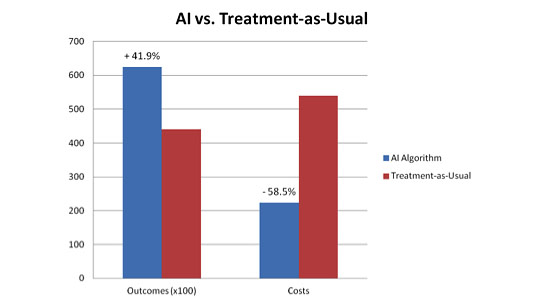

Costs
At release, Plexor the Homebot is predicted to cost around $1,500 USD - shipping costs not included. To retrieve information, update software, and subscription to the collective learning network, there is a montly fee of $100 USD for Plexor owners. Compared to other artificial-intelligence based robots on the market, Plexor's price is revolutionary for the amount of features offered. Manticore has provided information below explaining the underlying costs behind the development of AI.
Subcosts of Artificial Intelligence
Pushing artificial intelligence internally and commercially brings on numerous costs. There is not just one cost for the creation of the AI. The AI development has costs in subsections. Along with this, much of the money is spent on marketing, product design, and release of the product. All these things bring on a plethora of costs that can total to very large numbers. This is the biggest reason why up until only very recently, only the biggest of technology corporations could afford these AI’s.
Discovery and Analysis
The discovery and analysis phase is used to set up meetings between AI development companies and their clients in order to fully understand what kind of AI is being designed, and the most effective way to do it. Teams look at what the AI is intended to be successful at doing whether it is decision or data management. It is then discovered whether it is even possible to make an AI for that concept. This stage lasts around two to three weeks and requires costs for presentation resources and staffing pay.
Implementation
Implementation is when the AI design team designs a preliminary prototype AI through actual code, or just a drawing or write-up. These prototypes are shown to the clients and discussed for wanted or missing features as well as potential usability issues. These prototypes are very cheap to produce and can very easily be changed to fit the client’s needs because they are created before true development begins. It is estimated that the average implementation of a prototype costs around $25,000.
Minimum Viable Product
Minimum Viable Product or MVP for short, is the intended product with the basic features in a semi-functional state of what the real product is going to be like when developed in the future. MVP’s work with actual data that the final product will be working with in real life scenarios, and are tested to see needed functionality tuning. They are exposed to real-world customers to get a better idea on what needs to be fixed for the final product to be perfectly functional. It is still less expensive to make changes at this stage than it is with the final product. MVP’s can cost from $35,000 to in excess of $100,000.
Release
The final product with all modifications made during each step is released into the public for market use. The product is functional and validated at this point. This stage also includes extra costs like marketing and advertising. The cost of the release of a product changes depending on the size, capability, and amount of technology packed into the specific AI (i.e. Alexa would cost more to release than a basic chat bot). The cost of the release of the AI is generally pre-determined and provided to the clients in the previous stages to make sure they truly want to go through with development.
Jobs
As artificial intelligence becomes much more popular and mainstream, more things that form basic society are being cut by it. As it advances, the potential for AI to take over and lose jobs is a constant threat. The U.S. government estimates that by 2025, over 3 million jobs will have been replaced by artificial intelligence. This especially impacts uneducated and unskilled workers. This could lead to a major socioeconomic divide between the middle and lower classes which could cause an economic crisis. Not all costs are just about the companies paying for the AI.
Subscription-Based Artifical Intelligence
Due to current costs of developing custom artificial intelligence being to much for most companies, subscription-based AI services have become available, generally for business and analytic calculations. These AI’s are sold on a yearly, monthly, or even weekly subscription service that allows numerous companies to use the same AI for the same purposes. These AI are designed to save smaller businesses money, while making them more efficient and effective. One of these popular services is Conversica.
Cost Savings
For obvious reasons, companies would never switch to using artificial intelligence if it were not profitable for them. Companies are willing to spend exuberant amounts of money because AI can help them make back all of the money they spent, and more. In fact, AI expands business to a point that was not possible before. Forbes estimates that by 2035, business in the United States could be expanded by 38% just because of the use of artificial intelligence. CNBC estimates that chat bots alone could help cut the costs of running business by over $8 billion dollars per year by 2022. As can be seen, although it has a massive ontaking cost, artificial intelligence may help the economy in the end.
Lower Costs
AIs in the healthcare field provide better quality service for lower costs, as concluded by a service from Indiana University.
